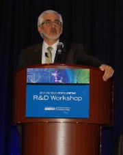
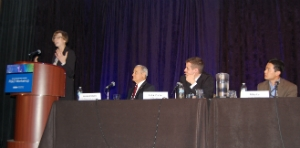

Nearly 250 researchers, manufacturers, and other industry insiders and observers gathered in Long Beach, CA, January 29–31, 2013, to participate in DOE's tenth annual Solid-State Lighting (SSL) R&D Workshop. DOE SSL Program Manager James Brodrick kicked off Day 1 by noting how far SSL has come in the past 10 years. Whereas in 2003 LEDs were just starting to gain a foothold in traffic signals and exit signs, today they're used for nearly every lighting application, and OLED niche products are gaining traction. Brodrick noted that despite the progress, there's still significant headroom, and urged attendees to explore ways to maximize efficacy, "not compared to what was, but compared to what is and what can be." He emphasized the present opportunity to push the boundaries with new approaches, product designs, form factors, and value-added features.
Ed Ebrahimian of the City of Los Angeles discussed the city's program to convert 140,000 of its 210,000 streetlights to LED. To date, the city has converted more than 115,000 streetlights and is achieving an estimated 63.5 percent energy savings over the incumbent high-pressure sodium (HPS) streetlights. And L.A.'s annual street lighting maintenance costs have dropped by an estimated $2.5 million. What's more, the LED streetlights provide better uniformity than HPS. A networked control system has been installed on about 54,000 of the city's streetlights to date, primarily to take advantage of the ability to remotely monitor the performance of L.A.'s unprecedented LED deployment. Ebrahimian and his colleagues are now looking at how adaptive controls can boost the already impressive energy savings and provide additional value to the city.
John Kassakian of the Massachusetts Institute of Technology (MIT) shared a preview of a National Academy of Sciences report on solid-state lighting, looking at the current status of SSL development and areas that need to be addressed, either through research or coordinated action by industry. The preliminary report is very supportive of DOE's SSL program and includes a number of recommendations that align with current areas of DOE R&D focus, as well as suggestions for activities of a broader nature for the federal government. NAS expects to publish the final report in late March.
Accelerating Energy Savings and Market Adoption
A panel of speakers, moderated by Brodrick, discussed what's next for LED and OLED lighting and how to accelerate that next leap forward. Brian Chemel of Digital Lumens discussed how "smarter" lights will drive greater market adoption and made the point that combining the features of observation, control, measurement, and communication in a lighting system will provide users with verifiable energy savings that will justify the higher cost. Chemel also raised the tantalizing question, "What if all SSL fixtures were smart?" and emphasized that the use of controls could significantly increase the 46 percent reduction in lighting energy consumption that DOE forecasts SSL will bring by 2030.
Mike Lu of Acuity Brands talked about making OLED lighting mainstream, noting that we now have an opportunity to rethink the way we utilize light. He pointed out that all too often the lighting in a space is excessive, resulting in wasted light that reaches areas where it's not needed. Lu explained that because OLEDs are diffuse light sources that can easily be made on flexible substrates, they can help us utilize light more efficiently—for example, with luminaires that are designed to be mounted in close proximity to the areas where the light is needed, or that can be designed to transform the interaction of people with the lighting system (e.g., using sensors to allow the light to respond to hand gestures). Value-added features like these, he emphasized, can justify the additional cost.
Susanne Seitinger of Philips Color Kinetics spoke about how using and controlling the color of light could increase the adoption of SSL—which not only happens to be color tunable, but is well-suited for use with controls. She discussed how controlling the light quality can create ambient experiences that are both meaningful and useful—for example, in a healthcare setting where, once the medical staff has done its work under full illumination, a shift to more soothing colors can reduce the patient's stress and promote relaxation. Seitinger noted that we devote a great deal of attention to configuring our smartphones and tablets to meet our wants and needs, yet we don't do the same for lighting—even though LED lighting allows for the very same kind of personalization.
Day 1 concluded with an optional bus tour of L.A.'s residential and arterial roadway lighting, led by Ed Ebrahimian and Jim Quigley of the L.A. Bureau of Street Lighting. At the first stop, on Hill Street, attendees saw an outdoor dimming demonstration of Leotek 120 LED Generation C lighting remotely controlled with a laptop. They witnessed how the system uses GPS and remote monitoring technology to track the status of streetlights. The tour continued to the Bureau's Field Operations Division yard, where participants interacted with a hands-on display of new and old streetlights and heard Jeff Ziliotto of the Bureau's field office explain how the lighter product weight and reduced packaging of the LED fixtures have positively impacted storage and installation. Next, the tour visited the city's street lighting museum, where 275 fixtures and miscellaneous equipment from the city's 145-year history provided contrast and historical perspective on how far outdoor lighting has come since the gas streetlamp days. Finally, attendees viewed side-by-side examples of Leotek 40 and Beta LED 40 cobrahead luminaires being tested 24/7 in a comparative evaluation, along with decorative post-top fixtures.
Collaborating for Success
The next day, a workshop panel on collaboration, moderated by Morgan Pattison of SSLS Inc., explored how pooling resources in joint efforts can accelerate the search for solutions and hasten adoption of SSL. Dennis Bradley of GE Lighting described various successful collaborations—with consortiums, standards-setting bodies, and customers. He described how the Zhaga consortium promotes the interchangeability of LED modules through voluntary specifications regarding their interfaces—the ultimate goal, of course, being to increase market confidence in LED lighting products. Bradley reviewed SSL standards work being done by the National Electrical Manufacturers Association, the American National Standards Institute, and the Illuminating Engineering Society. He concluded with several examples of collaborations with customers to create LED lighting products better suited to their needs.
Lynn Davis of RTI International then described his involvement with a DOE-industry consortium on system reliability, emphasizing how the various members are working together to pool information and resources, and noting that this kind of sharing helps advance understanding much more quickly than if one company or organization were working on the problem alone. He said the reliability of LED luminaires must be considered from a systems perspective, because the weak link in the system will determine its reliability. Davis observed that even in overstress conditions, LED luminaires exhibit a high level of robustness, so the willingness among industry participants to collaborate and share reliability information is key to advancing our knowledge of sources of failures.
Sebastian Reineke of MIT shared his concern that diversity is hindering the development of white OLEDs. He noted that there are currently about 15 different OLED architectures and 10 outcoupling methods being pursued by various R&D teams, and said it would speed up OLED development considerably if all parties involved would put their heads together and agree on the approaches that have the most potential, from a basic device point of view. Reineke advocated using those approaches to create a benchmark system that's workable for everyone and can lead the industry, and installing a feedback loop. As an example, he cited OLED 100, a European collaborative featuring multiple partners but one common reference system.
DOE R&D Update
Brodrick began the next session with an overview of DOE SSL R&D portfolio funding and current areas of focus. He emphasized the importance of attendee input to guide updates to the DOE SSL Multi-Year Program Plan (MYPP), used to develop DOE solicitations. He then gave special recognition to five project teams that made significant contributions in 2012: RTI International, Philips Lumileds, the University at Buffalo (SUNY), Soraa, and PPG Industries.
In the next session, the project teams shared a snapshot of their recognized projects and latest results:
- Lynn Davis of RTI International shared an update on RTI's work in support of the DOE SSL systems reliability consortium (this talk was presented in the prior panel on successful collaborations).
- Wouter Soer offered an overview of Philips Lumileds' efforts to create a high-power warm-white hybrid LED package for general illumination.
- Keith Kahen of the University at Buffalo discussed the inroads his project has made in using high-efficiency colloidal quantum dot phosphors to create a viable replacement technology for conventional phosphors.
- Mike Grundmann described Soraa's efforts to close the "warm-white gap" by using semi- and non-polar LEDs on bulk GaN substrates to provide high efficacy at high color reference index (CRI).
- Dennis O'Shaughnessy presented PPG Industries' research to develop a low-cost integrated substrate for OLED lighting, using float glass.
Related Government-Supported SSL R&D
Joel Chaddock of National Energy Technology Laboratory highlighted the central role the DOE SSL program plays in guiding many related government-supported SSL R&D efforts. As a preview to the evening poster session, he offered an overview of the DOE SSL program elements, including Core Technology Research, Product Development, Manufacturing R&D, and Market Development Support. He then described several additional DOE-funded efforts related to SSL R&D, including projects funded under the DOE Small Business Innovation Research (SBIR) program, the Advanced Research Projects Agency–Energy (ARPA-E), the Advanced Manufacturing Office (AMO), and the Energy Frontier Research Centers (EFRCs).
Later that evening, researchers representing projects funded by the DOE SSL program, SBIR, ARPA-E, AMO, and EFRCs presented their work at the poster session and reception sponsored by the Next Generation Lighting Industry Alliance, providing attendees with additional opportunities for discussion, information exchange, and potential partnering.
Life Cycle Impact
Marc Ledbetter of Pacific Northwest National Laboratory (PNNL) discussed a three-part DOE study of the life-cycle environmental and energy impacts of LED lighting products relative to compact fluorescent (CFL) and incandescent alternatives. He focused primarily on the soon-to-be-published Part 3 testing results, which augment the life-cycle analysis results with chemical analysis of a variety of lamps using standard testing procedures from the U.S. Environmental Protection Agency and the State of California. A total of 22 samples, representing 11 different lamps, were tested to ascertain whether potentially toxic elements are present in concentrations that exceed regulatory thresholds for hazardous waste. Part 3 of the report is slated for publication in late March.
Reframing the Plan
Fred Welsh of Radcliffe Advisors set the stage for some lively R&D discussions by encouraging attendees to focus on future R&D needs and examine what is needed to bring SSL to the next level. He asked attendees to rethink the framework of the DOE SSL MYPP. Do we have the right milestones to achieve DOE's efficacy goals and broaden market adoption? Are we tracking progress with the right figures of merit? Welsh reviewed the recommended tasks identified at the Fall 2012 roundtables that preceded the workshop, and charged attendees to share their input in the breakout sessions and small group discussions to follow.
On Wednesday and Thursday, workshop participants divided into separate LED and OLED track sessions to explore those recommended tasks and prioritize them for the SSL industry. The input from these track sessions will be used to update the MYPP and guide DOE planning for R&D solicitations. On Wednesday, experts shared their views on research needs and strategies to take LED and OLED lighting to the next level, as well as on unresolved science challenges that need to be addressed. Introductory presentations were followed by group discussions. For Thursday's topic table discussions, attendees split up into small groups that each explored a single topic in greater detail, then shared key points among all the groups, and finally discussed how the input related to the proposed priority tasks for the updated MYPP.
The Art of Lighting Art
Day 3 began with lighting designer Scott Rosenfeld of the Smithsonian American Art Museum giving his perspective on where LED lighting solutions make sense in a museum setting, where and how they fall short, and what designers wish they could do with today's LED products. In addition to describing what type of lighting he used in a variety of museum settings, why he used it, and how it worked, he also included a "wish list" based on observations and caveats related to each install. Although an advocate of using LEDs to save energy wherever practicable, Rosenfeld referenced "the agony and the ecstasy" of his experiences with LED lighting. On one hand, he is seeing energy savings of 75–80% with LEDs. On the other hand, he's starting to see color-shift issues in a number of LED lamps (despite his rigorous product selection process). He said he's doing follow-up testing with DOE and will be contacting various manufacturers to determine the cause.
The Color Question
A panel of experts, moderated by Pattison, discussed issues surrounding light spectrum and color perception. Jean Paul Freyssinier of Rensselaer Polytechnic Institute's Lighting Research Center (LRC) explored the concept of white light and how to measure it. He observed that because color rendering is multidimensional, no single metric can accurately characterize it, which is why the LRC recommends using two metrics: CRI and the gamut area index. Noting that all of the ANSI standards for LEDs, fluorescent lamps, and many other light sources are based on the blackbody curve (BBC), Freyssinier questioned whether the BBC is the most suitable reference to use for white light. He described an alternative reference developed by the LRC—the white-body curve—that's slightly above the BBC at high color temperatures and significantly below it at low color temperatures, and that studies have shown corresponds to what people consider to be "white" light.
Cameron Miller of the National Institute of Standards and Technology (NIST) compared continuous-spectrum light sources with discrete-spectrum sources. He pointed out that the efficacy potential of current broadband phosphor-converted white LEDs (pc-LEDs) is limited by phosphor conversion losses and light emitted beyond the eye response, whereas narrow-band LEDs have the potential to be more energy efficient and to render colors just as well as broadband sources. Miller presented evidence that a combination of several discrete spectra that are properly tuned can achieve both excellent color rendering and high efficacy. He suggested that this may eventually solve the tradeoff between efficacy and color quality.
Brian Liebel of the Lighting Partnership discussed spectrally enhanced lighting (SEL), a design method for interior applications that involves enhancing visual acuity by increasing the amount of short-wavelength energy (i.e., blue) within the light. He explained that the increased blue content causes the pupils to shrink, which increases the ability to perform detailed tasks efficiently. This, Liebel said, allows for equivalent visual efficiency under lower light levels, which can save substantial energy. Acknowledging the widespread belief that most people prefer warm-white over cool-white light, he cited several studies suggesting that in a work environment, most people have no real preference. Liebel noted that IES is expected to come out soon with TM-24, a new technical memorandum on SEL.
Electronics and Controls
The workshop concluded with a panel moderated by Welsh, which took a look at how dimmers, drivers, and controls can provide additional opportunities for energy savings, and explored related issues that need to be addressed to maximize those opportunities.
Mark Hand of Acuity Brands hand provided some warnings about possible unintended consequences of the use of controls—such as efficiency drop, flicker, or color shift resulting from dimming LEDs with drivers that were designed for a full load. He noted the potential for total harmonic distortion (THD) from these drivers causing problems with neutral lines, which in turn will cause problems with other systems. To prevent such problems from becoming widespread, Hand advocated the development of good driver standards and the enforcement of minimum requirements for THD and power factor. 'We need full control, with none of the penalties," he said, noting that driver design is the key. "We need acceptable THD and power factor across the entire dimming range."
Anand Upadhyay of Philips Lighting explored the various methods of control of LED drivers. He compared the characteristics and benefits of the three categories of drivers—fixed, dimmable, and programmable—and discussed such features as module temperature protection, constant light output, over the life, adjustable startup time, flexible output configuration, and diagnostic information. Upadhyay reviewed various dimming methods, such as 0–10V, adjustable output current, digital addressable lighting interface, Dynadim, and AmpDim. He emphasized that LED drivers are designed to operate at a very wide power range to provide optimal performance, and that they can interface with various control means and provide substantial lighting-energy savings.
Bruce Kinzey of PNNL described some experiences with lighting controls in exterior applications at four GATEWAY demonstration sites: a retail center parking lot, an aboveground parking structure, a belowground parking garage, and a corporate campus parking lot. He said despite the potential for a substantial increase in energy savings, there remain a number of significant challenges. Kinzey recounted how at one site, placing a motion sensor on the edge of a lot, near a well-traveled street, caused false trips, and how at another site this was caused by air movement. Another issue he described involved unworkable installation instructions for the sensors. Kinzey emphasized the importance of sharing this kind of information with manufacturers and end users, to improve not only the technology itself but also its manner of implementation.
Brodrick concluded the three-day workshop by thanking the attendees and speakers for their input and participation. He noted two additional DOE SSL workshops in 2013: the Manufacturing R&D Workshop June 5–6 in Boston, and the Market Introduction Workshop November 12–14 in Portland. He also encouraged attendees to stay apprised of DOE SSL program activities by visiting www.ssl.energy.gov.